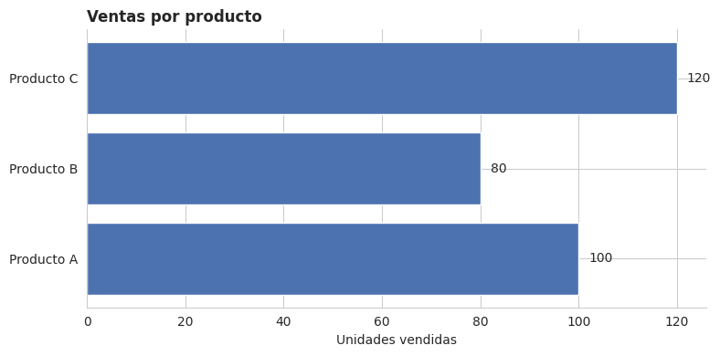
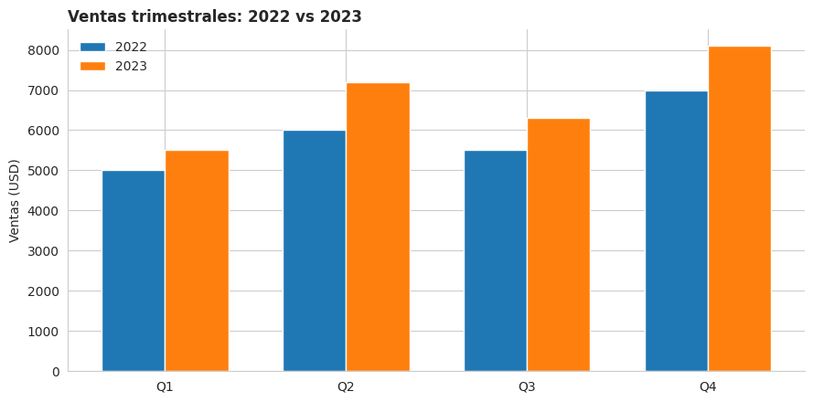
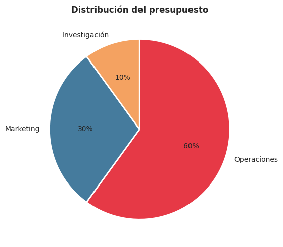
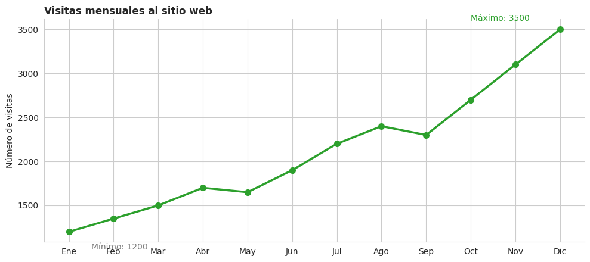
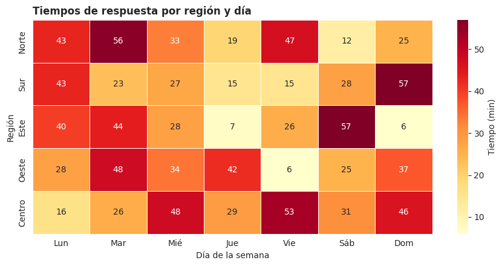
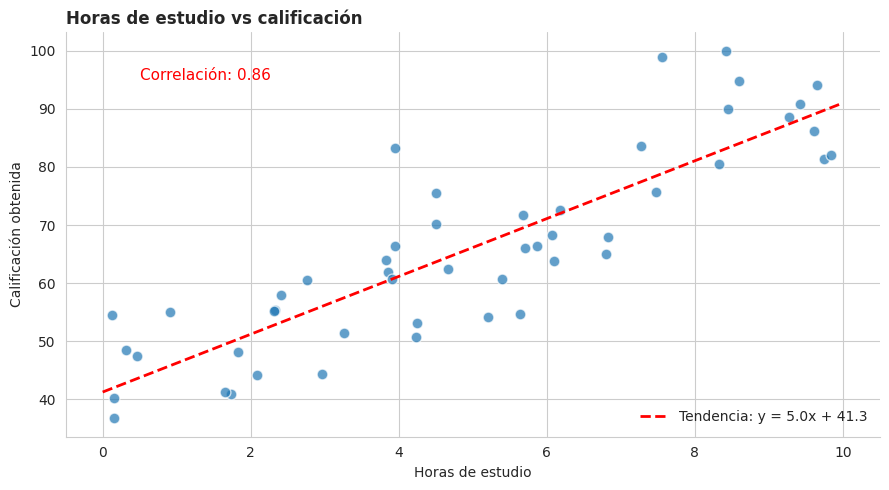
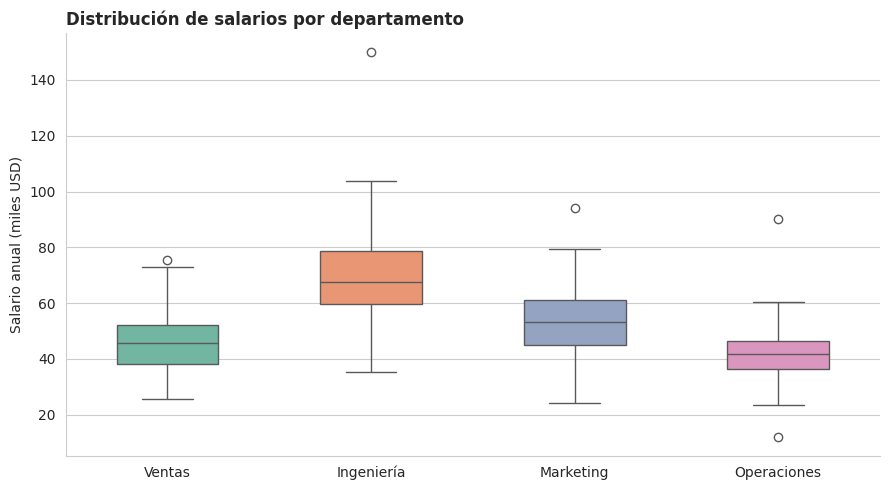
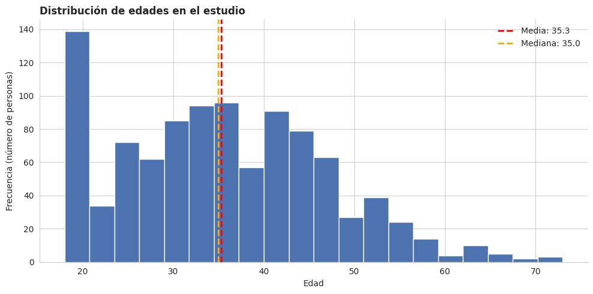
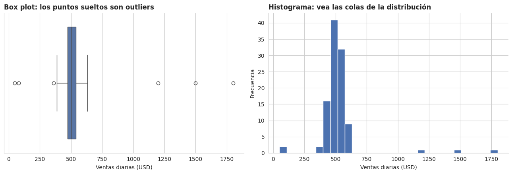
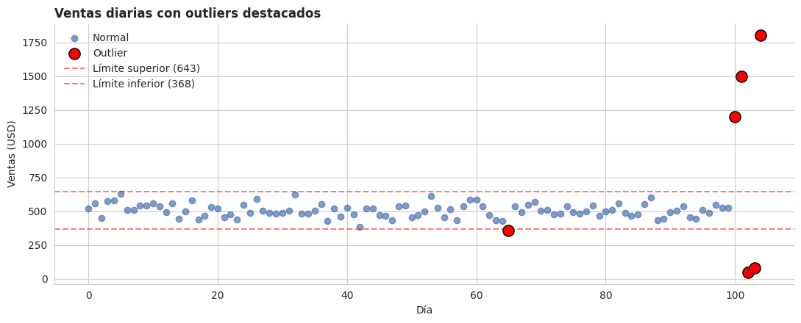

1.3.14 Analítica de Datos: Tipos de Gráficos y Análisis Exploratorio#
Clase 1 — Versión Python con Matplotlib, Seaborn y Pandas
Sergio Alejandro Holguín García
Contenido#
Por qué son importantes los datos
Configuración del entorno
Tipos de gráficos:
Gráfico de barras
Gráfico de columnas
Gráfico circular (pastel)
Gráfico de líneas
Mapa de calor (heatmap)
Gráfico de dispersión (scatter plot)
Diagrama de caja (box plot)
Histograma
Análisis exploratorio: identificación de valores atípicos
1. ¿Por qué son importantes los datos?#
Los datos nos ayudan a tomar mejores decisiones, entender lo que está pasando y encontrar patrones que a simple vista no se ven.
Cuando sabemos interpretarlos bien, podemos descubrir información valiosa y compartirla de forma clara, para que otros también la comprendan y la usen.
La clave está en hacer sencillo lo complejo: transformar números y tablas en mensajes fáciles de entender.
Para lograrlo necesitamos dos cosas:
Saber qué tipo de gráfico usar según la pregunta que queremos responder.
Saber explorar los datos antes de visualizarlos (limpieza, valores extremos, distribución).
Este notebook recorre ambos aspectos con ejemplos prácticos en Python.
2. Configuración del entorno#
Importamos las librerías que vamos a usar en todo el notebook.
# Manipulación numérica y de tablas
import numpy as np
import pandas as pd
# Visualización
import matplotlib.pyplot as plt
import seaborn as sns
# Semilla para que los datos aleatorios sean reproducibles
# (cada vez que ejecutemos el notebook obtendremos los mismos valores)
np.random.seed(42)
# Configuración estética general para que los gráficos se vean limpios
sns.set_style('whitegrid') # Fondo blanco con cuadrícula sutil
plt.rcParams['figure.dpi'] = 100 # Resolución
plt.rcParams['axes.titleweight'] = 'bold' # Títulos en negrita por defecto
print('Librerías cargadas correctamente')
Librerías cargadas correctamente
3. Tipos de gráficos#
Cada gráfico tiene un propósito. Elegir el correcto facilita la lectura; elegir el incorrecto confunde al lector. A continuación veremos los más usados.
3.1 Gráfico de barras#
¿Qué es? Representa datos con barras rectangulares horizontales. Cada barra muestra el valor de una categoría.
¿Cuándo usarlo? Para comparar cantidades entre categorías. Es especialmente útil cuando los nombres de las categorías son largos (porque caben en horizontal) o cuando hay muchas categorías.
Ejemplo: comparar ventas por producto.
# Datos del ejemplo: ventas por producto
productos = ['Producto A', 'Producto B', 'Producto C']
ventas = [100, 80, 120]
# Crear la figura y el eje
fig, ax = plt.subplots(figsize=(8, 4))
# barh = bar horizontal (gráfico de BARRAS, no de columnas)
ax.barh(productos, ventas, color='#4c72b0')
# Añadir el valor numérico al final de cada barra para facilitar la lectura
for i, v in enumerate(ventas):
ax.text(v + 2, i, str(v), va='center', fontsize=10)
# Títulos y etiquetas
ax.set_title('Ventas por producto', loc='left')
ax.set_xlabel('Unidades vendidas')
# Quitar bordes superiores y derechos para una apariencia limpia
for spine in ['top', 'right']:
ax.spines[spine].set_visible(False)
plt.tight_layout()
plt.show()

Interpretación: El Producto C lidera con 120 unidades, seguido de A (100) y B (80). En un gráfico de barras horizontal el ojo compara longitudes, que es la tarea visual más precisa para los seres humanos.
3.2 Gráfico de columnas#
¿Qué es? Similar al de barras, pero vertical. Las categorías están en el eje X y los valores en el eje Y.
¿Cuándo usarlo? Para comparar valores a lo largo del tiempo o entre categorías cuando los nombres son cortos. Es la opción natural para series temporales discretas (trimestres, meses, años).
Ejemplo: ventas por trimestre comparando dos años.
# Datos: ventas trimestrales en dos años distintos
trimestres = ['Q1', 'Q2', 'Q3', 'Q4']
ventas_2022 = [5000, 6000, 5500, 7000]
ventas_2023 = [5500, 7200, 6300, 8100]
# Posiciones numéricas para colocar las columnas lado a lado
x = np.arange(len(trimestres)) # [0, 1, 2, 3]
ancho = 0.35 # ancho de cada columna
fig, ax = plt.subplots(figsize=(9, 4.5))
# Dos series: una desplazada a la izquierda y otra a la derecha del centro
ax.bar(x - ancho/2, ventas_2022, width=ancho, label='2022', color='#1f77b4')
ax.bar(x + ancho/2, ventas_2023, width=ancho, label='2023', color='#ff7f0e')
# Configurar las etiquetas del eje X (los trimestres)
ax.set_xticks(x)
ax.set_xticklabels(trimestres)
ax.set_title('Ventas trimestrales: 2022 vs 2023', loc='left')
ax.set_ylabel('Ventas (USD)')
ax.legend(frameon=False)
for spine in ['top', 'right']:
ax.spines[spine].set_visible(False)
plt.tight_layout()
plt.show()

Interpretación: En todos los trimestres 2023 superó a 2022. La diferencia más grande está en Q4, lo que indica una temporada alta cada vez más fuerte.
Diferencia entre barras y columnas:
Característica |
Barras (horizontal) |
Columnas (vertical) |
|---|---|---|
Orientación |
Horizontal |
Vertical |
Ideal para |
Categorías con nombres largos |
Series temporales |
Función matplotlib |
|
|
3.3 Gráfico circular (pastel)#
¿Qué es? Muestra proporciones como segmentos de un círculo. La suma de todos los segmentos representa el 100%.
¿Cuándo usarlo? Para mostrar partes de un total, idealmente con pocas categorías (entre 2 y 5). Con más categorías el ojo no compara bien los ángulos.
Ejemplo: distribución del presupuesto.
# Datos: distribución porcentual del presupuesto
categorias = ['Operaciones', 'Marketing', 'Investigación']
porcentajes = [60, 30, 10]
colores = ['#e63946', '#457b9d', '#f4a261']
fig, ax = plt.subplots(figsize=(7, 5))
ax.pie(
porcentajes,
labels=categorias,
colors=colores,
autopct='%1.0f%%', # Muestra el porcentaje dentro de cada porción
startangle=90, # Inicia desde arriba (12 en punto)
counterclock=False, # Sentido horario, lectura más natural
wedgeprops={'edgecolor': 'white', 'linewidth': 2} # Borde blanco entre porciones
)
ax.set_title('Distribución del presupuesto')
plt.tight_layout()
plt.show()

Interpretación: Operaciones se lleva la mayor parte del presupuesto (60%), Marketing el 30% e Investigación el 10%.
Advertencia: si tuviéramos 10 o 15 categorías, este gráfico se volvería ilegible. En esos casos es mejor un gráfico de barras ordenado de mayor a menor.
3.4 Gráfico de líneas#
¿Qué es? Usa puntos conectados por líneas para mostrar tendencias.
¿Cuándo usarlo? Para mostrar evolución en el tiempo. Es el gráfico ideal cuando el eje X representa una variable continua u ordenada (días, meses, años).
Ejemplo: evolución de visitas a una página web durante 12 meses.
# Datos: visitas mensuales a un sitio web
meses = ['Ene', 'Feb', 'Mar', 'Abr', 'May', 'Jun',
'Jul', 'Ago', 'Sep', 'Oct', 'Nov', 'Dic']
visitas = [1200, 1350, 1500, 1700, 1650, 1900,
2200, 2400, 2300, 2700, 3100, 3500]
fig, ax = plt.subplots(figsize=(10, 4.5))
# Línea con marcadores en cada punto para destacar las observaciones
ax.plot(meses, visitas,
color='#2ca02c', linewidth=2.5,
marker='o', markersize=7)
# Resaltar el punto máximo y mínimo con anotaciones
idx_max = visitas.index(max(visitas))
idx_min = visitas.index(min(visitas))
ax.annotate(f'Máximo: {max(visitas)}',
xy=(idx_max, max(visitas)),
xytext=(idx_max - 2, max(visitas) + 100),
fontsize=10, color='#2ca02c')
ax.annotate(f'Mínimo: {min(visitas)}',
xy=(idx_min, min(visitas)),
xytext=(idx_min + 0.5, min(visitas) - 200),
fontsize=10, color='gray')
ax.set_title('Visitas mensuales al sitio web', loc='left')
ax.set_ylabel('Número de visitas')
for spine in ['top', 'right']:
ax.spines[spine].set_visible(False)
plt.tight_layout()
plt.show()

Interpretación: Las visitas crecieron de manera sostenida durante el año, casi triplicándose entre enero (1.200) y diciembre (3.500). La línea facilita ver no solo los valores, sino también el ritmo del crecimiento.
3.5 Mapa de calor (heatmap)#
¿Qué es? Representa valores usando colores en una matriz. Cada celda toma un color según su valor numérico.
¿Cuándo usarlo? Para ver patrones y concentraciones cuando tenemos datos cruzados por dos dimensiones (por ejemplo: día de la semana × hora del día, o región × categoría de producto).
Ejemplo: tiempos de respuesta de servicio al cliente por área geográfica y día de la semana.
# Construimos una matriz simulada: filas = regiones, columnas = días
regiones = ['Norte', 'Sur', 'Este', 'Oeste', 'Centro']
dias = ['Lun', 'Mar', 'Mié', 'Jue', 'Vie', 'Sáb', 'Dom']
# Tiempos de respuesta en minutos (datos aleatorios entre 5 y 60)
tiempos = np.random.randint(5, 60, size=(len(regiones), len(dias)))
# Convertir a DataFrame para que seaborn etiquete los ejes automáticamente
df_tiempos = pd.DataFrame(tiempos, index=regiones, columns=dias)
print('Matriz de tiempos de respuesta (en minutos):')
df_tiempos
Matriz de tiempos de respuesta (en minutos):
| Lun | Mar | Mié | Jue | Vie | Sáb | Dom | |
|---|---|---|---|---|---|---|---|
| Norte | 43 | 56 | 33 | 19 | 47 | 12 | 25 |
| Sur | 43 | 23 | 27 | 15 | 15 | 28 | 57 |
| Este | 40 | 44 | 28 | 7 | 26 | 57 | 6 |
| Oeste | 28 | 48 | 34 | 42 | 6 | 25 | 37 |
| Centro | 16 | 26 | 48 | 29 | 53 | 31 | 46 |
fig, ax = plt.subplots(figsize=(9, 4.5))
# annot=True escribe el número dentro de cada celda
# cmap='YlOrRd' = paleta secuencial (amarillo -> rojo): bajo a alto
sns.heatmap(df_tiempos,
annot=True, fmt='d',
cmap='YlOrRd',
linewidths=0.5, linecolor='white',
cbar_kws={'label': 'Tiempo (min)'},
ax=ax)
ax.set_title('Tiempos de respuesta por región y día', loc='left')
ax.set_xlabel('Día de la semana')
ax.set_ylabel('Región')
plt.tight_layout()
plt.show()

Interpretación: Los colores más intensos (rojos) marcan los puntos donde el servicio fue más lento. De un vistazo se identifican las combinaciones región/día que requieren atención.
Consejo: elige la paleta según el tipo de dato:
Secuencial (
YlOrRd,Blues,viridis): valores que van de menos a más.Divergente (
RdBu,coolwarm): valores con un punto medio (por ejemplo, ganancia/pérdida).Cualitativa (
Set2,tab10): categorías sin orden.
3.6 Gráfico de dispersión (scatter plot)#
¿Qué es? Usa puntos para mostrar la relación entre dos variables numéricas.
¿Cuándo usarlo? Para identificar correlaciones, agrupaciones (clusters) o valores atípicos.
Ejemplo: relación entre horas de estudio y calificación obtenida.
# Generar datos simulados con correlación positiva
horas_estudio = np.random.uniform(0, 10, 50) # 50 estudiantes, 0-10 horas
ruido = np.random.normal(0, 8, 50) # Variabilidad realista
calificacion = 40 + 5 * horas_estudio + ruido # Relación lineal + ruido
calificacion = np.clip(calificacion, 0, 100) # Acotar entre 0 y 100
fig, ax = plt.subplots(figsize=(9, 5))
# Cada punto representa un estudiante
ax.scatter(horas_estudio, calificacion,
color='#1f77b4', alpha=0.7, s=60, edgecolor='white')
# Línea de tendencia (regresión lineal simple) para visualizar la correlación
coef = np.polyfit(horas_estudio, calificacion, 1) # ajuste de grado 1
x_linea = np.array([0, 10])
y_linea = coef[0] * x_linea + coef[1]
ax.plot(x_linea, y_linea, color='red', linestyle='--', linewidth=2,
label=f'Tendencia: y = {coef[0]:.1f}x + {coef[1]:.1f}')
# Coeficiente de correlación de Pearson
correlacion = np.corrcoef(horas_estudio, calificacion)[0, 1]
ax.text(0.5, 95, f'Correlación: {correlacion:.2f}',
fontsize=11, color='red')
ax.set_title('Horas de estudio vs calificación', loc='left')
ax.set_xlabel('Horas de estudio')
ax.set_ylabel('Calificación obtenida')
ax.legend(loc='lower right', frameon=False)
for spine in ['top', 'right']:
ax.spines[spine].set_visible(False)
plt.tight_layout()
plt.show()
print(f'Coeficiente de correlación: {correlacion:.3f}')

Coeficiente de correlación: 0.864
Interpretación: Cada punto es un estudiante. La nube se inclina hacia arriba: a más horas de estudio, mayor calificación. La correlación cercana a 0,9 confirma una relación positiva fuerte.
Lectura del coeficiente de correlación de Pearson:
Valor |
Interpretación |
|---|---|
Cerca de +1 |
Correlación positiva fuerte |
Cerca de 0 |
Sin correlación lineal |
Cerca de -1 |
Correlación negativa fuerte |
Importante: correlación no implica causalidad. Que dos variables se muevan juntas no significa que una cause la otra.
3.7 Diagrama de caja (box plot)#
¿Qué es? Muestra de un solo vistazo:
La mediana (línea dentro de la caja).
Los cuartiles Q1 y Q3 (bordes inferior y superior de la caja).
El rango de los datos («bigotes»).
Los valores atípicos (puntos fuera de los bigotes).
¿Cuándo usarlo? Para resumir la dispersión de un conjunto de datos numéricos y comparar varios grupos entre sí.
Ejemplo: comparar salarios entre departamentos.
# Simular salarios para 4 departamentos (en miles de USD anuales)
salarios = pd.DataFrame({
'Ventas': np.random.normal(45, 10, 100),
'Ingeniería': np.random.normal(70, 15, 100),
'Marketing': np.random.normal(55, 12, 100),
'Operaciones': np.random.normal(40, 8, 100),
})
# Añadimos algunos valores atípicos artificiales para que el box plot los detecte
salarios.loc[0, 'Ingeniería'] = 150 # Un salario muy alto
salarios.loc[1, 'Operaciones'] = 90 # Otro outlier
fig, ax = plt.subplots(figsize=(9, 5))
sns.boxplot(data=salarios,
palette='Set2',
width=0.5,
ax=ax)
ax.set_title('Distribución de salarios por departamento', loc='left')
ax.set_ylabel('Salario anual (miles USD)')
for spine in ['top', 'right']:
ax.spines[spine].set_visible(False)
plt.tight_layout()
plt.show()

Cómo leer el box plot:
o <- valores atípicos (outliers)
|
----- <- bigote superior (máximo no atípico)
| |
|-----| <- Q3 (75% de los datos por debajo)
| |
|-----| <- mediana (50%)
| |
|-----| <- Q1 (25%)
| |
----- <- bigote inferior (mínimo no atípico)
|
o <- valores atípicos
Interpretación del ejemplo: Ingeniería tiene los salarios más altos en mediana, pero también la mayor dispersión. Operaciones es el departamento con menor variabilidad. Los puntos sueltos por encima son outliers: salarios excepcionalmente altos respecto al resto.
3.8 Histograma#
¿Qué es? Gráfico de barras que muestra la distribución de frecuencias de una variable numérica. El eje X se divide en intervalos («bins») y la altura de cada barra cuenta cuántos valores caen en ese intervalo.
¿Cuándo usarlo? Para analizar cómo se distribuyen los valores de una sola variable: si están concentrados, dispersos, sesgados a un lado, etc.
Ejemplo: distribución de edades en un estudio de mercado.
# Simulamos las edades de 1.000 personas con una distribución realista
edades = np.random.normal(loc=35, scale=12, size=1000)
edades = np.clip(edades, 18, 80).astype(int) # acotar entre 18 y 80 años
fig, ax = plt.subplots(figsize=(10, 5))
# bins=20 divide el rango en 20 intervalos
ax.hist(edades, bins=20,
color='#4c72b0', edgecolor='white')
# Líneas verticales para mostrar media y mediana
media = np.mean(edades)
mediana = np.median(edades)
ax.axvline(media, color='red', linestyle='--', linewidth=2,
label=f'Media: {media:.1f}')
ax.axvline(mediana, color='orange', linestyle='--', linewidth=2,
label=f'Mediana: {mediana:.1f}')
ax.set_title('Distribución de edades en el estudio', loc='left')
ax.set_xlabel('Edad')
ax.set_ylabel('Frecuencia (número de personas)')
ax.legend(frameon=False)
for spine in ['top', 'right']:
ax.spines[spine].set_visible(False)
plt.tight_layout()
plt.show()

Interpretación: La distribución se concentra alrededor de los 35 años, con forma aproximadamente simétrica («campana»). Si la media y la mediana son muy parecidas, la distribución está balanceada; si difieren mucho, hay sesgo o valores extremos.
Diferencia entre histograma y gráfico de barras:
Histograma |
Gráfico de barras |
|---|---|
Variable numérica continua |
Variable categórica |
Las barras están pegadas |
Las barras están separadas |
Eje X = intervalos numéricos |
Eje X = categorías |
4. Análisis exploratorio: identificación de valores atípicos#
Los valores atípicos (también llamados outliers o anomalías) son observaciones que se desvían significativamente del patrón general del conjunto de datos.
¿Por qué es importante identificarlos?#
Influencia en los resultados estadísticos: un outlier puede mover bruscamente la media, la desviación estándar o las correlaciones.
Sesgo en los modelos predictivos: los algoritmos de Machine Learning pueden «distraerse» intentando predecir esos casos extremos.
Impacto en el análisis de tendencias y patrones: un outlier puede dar la impresión de un pico o caída que en realidad no es representativo.
Indicadores de problemas o eventos especiales: a veces los outliers no son errores, sino señales de algo importante (un fraude, un fallo en el sensor, una promoción exitosa).
Interpretación correcta de los resultados: entender por qué existen ayuda a contar la historia real detrás de los datos.
Veamos a continuación las dos técnicas más usadas para detectarlos.
4.1 Crear un dataset con valores atípicos#
Para los ejemplos, simulamos las ventas diarias de una tienda durante 100 días, e introducimos algunos valores extremos a propósito.
# Datos normales: ventas diarias alrededor de 500 USD
ventas_normales = np.random.normal(loc=500, scale=50, size=100)
# Introducimos 5 valores atípicos (días con ventas anormalmente altas o bajas)
valores_atipicos = [1200, 1500, 50, 80, 1800]
ventas_completas = np.concatenate([ventas_normales, valores_atipicos])
# Convertimos a DataFrame
df = pd.DataFrame({'ventas_diarias': ventas_completas})
# Estadísticas descriptivas básicas
print('Resumen estadístico:')
print(df['ventas_diarias'].describe().round(2))
Resumen estadístico:
count 105.00
mean 525.74
std 189.67
min 50.00
25% 471.05
50% 505.00
75% 539.89
max 1800.00
Name: ventas_diarias, dtype: float64
4.2 Detectar outliers visualmente con un box plot#
El box plot es la herramienta más rápida: cualquier punto que aparezca fuera de los bigotes es un outlier según el criterio del rango intercuartílico.
fig, axes = plt.subplots(1, 2, figsize=(13, 4.5))
# Box plot: muestra los outliers como puntos individuales
sns.boxplot(x=df['ventas_diarias'], color='#4c72b0', ax=axes[0])
axes[0].set_title('Box plot: los puntos sueltos son outliers', loc='left')
axes[0].set_xlabel('Ventas diarias (USD)')
# Histograma: los outliers aparecen como barras aisladas en los extremos
axes[1].hist(df['ventas_diarias'], bins=30,
color='#4c72b0', edgecolor='white')
axes[1].set_title('Histograma: vea las colas de la distribución', loc='left')
axes[1].set_xlabel('Ventas diarias (USD)')
axes[1].set_ylabel('Frecuencia')
for ax in axes:
for spine in ['top', 'right']:
ax.spines[spine].set_visible(False)
plt.tight_layout()
plt.show()

4.3 Detectar outliers con el método del IQR (rango intercuartílico)#
Es el método más usado y el que aplica el box plot por defecto. La idea:
Calcular Q1 (percentil 25) y Q3 (percentil 75).
Calcular IQR = Q3 - Q1.
Considerar outlier todo valor que esté:
Por debajo de Q1 − 1,5 × IQR
Por encima de Q3 + 1,5 × IQR
def detectar_outliers_iqr(serie):
"""
Detecta valores atípicos usando el método del rango intercuartílico (IQR).
Parámetros
----------
serie : pd.Series
Columna numérica de un DataFrame.
Devuelve
-------
outliers : pd.Series
Subconjunto de la serie con los valores considerados atípicos.
limite_inferior, limite_superior : float
Umbrales calculados.
"""
Q1 = serie.quantile(0.25)
Q3 = serie.quantile(0.75)
IQR = Q3 - Q1
limite_inferior = Q1 - 1.5 * IQR
limite_superior = Q3 + 1.5 * IQR
# Selecciona los valores fuera de los límites
outliers = serie[(serie < limite_inferior) | (serie > limite_superior)]
return outliers, limite_inferior, limite_superior
# Aplicar la función
outliers, lim_inf, lim_sup = detectar_outliers_iqr(df['ventas_diarias'])
print(f'Límite inferior: {lim_inf:.2f}')
print(f'Límite superior: {lim_sup:.2f}')
print(f'Número de outliers detectados: {len(outliers)}')
print('Valores atípicos:')
print(outliers.round(2).to_list())
Límite inferior: 367.78
Límite superior: 643.16
Número de outliers detectados: 6
Valores atípicos:
[359.69, 1200.0, 1500.0, 50.0, 80.0, 1800.0]
4.4 Detectar outliers con el método del Z-Score#
Otra técnica común: convertir cada valor a su distancia (en desviaciones estándar) respecto a la media.
Un criterio típico es marcar como outlier cualquier observación con |Z| > 3, es decir, que esté a más de 3 desviaciones estándar de la media.
def detectar_outliers_zscore(serie, umbral=3):
"""
Detecta outliers usando el Z-Score.
Marca como atípico todo valor cuya distancia a la media,
medida en desviaciones estándar, supere el umbral.
"""
media = serie.mean()
desv = serie.std()
z_scores = (serie - media) / desv
outliers = serie[np.abs(z_scores) > umbral]
return outliers, z_scores
outliers_z, z_scores = detectar_outliers_zscore(df['ventas_diarias'])
print(f'Outliers detectados con |Z| > 3: {len(outliers_z)}')
print('Valores y sus Z-scores:')
for valor, z in zip(outliers_z, z_scores[np.abs(z_scores) > 3]):
print(f' Valor: {valor:7.2f} | Z-score: {z:5.2f}')
Outliers detectados con |Z| > 3: 3
Valores y sus Z-scores:
Valor: 1200.00 | Z-score: 3.55
Valor: 1500.00 | Z-score: 5.14
Valor: 1800.00 | Z-score: 6.72
4.5 Visualizar los outliers detectados#
Marcamos en rojo los valores atípicos sobre la serie original para verlos en contexto.
# Crear una marca booleana: True si el valor es atípico
df['es_outlier'] = (df['ventas_diarias'] < lim_inf) | (df['ventas_diarias'] > lim_sup)
fig, ax = plt.subplots(figsize=(11, 4.5))
# Puntos normales en azul
normales = df[~df['es_outlier']]
ax.scatter(normales.index, normales['ventas_diarias'],
color='#4c72b0', alpha=0.7, label='Normal')
# Outliers en rojo y más grandes para destacarlos
atipicos = df[df['es_outlier']]
ax.scatter(atipicos.index, atipicos['ventas_diarias'],
color='red', s=120, edgecolor='black', label='Outlier', zorder=5)
# Líneas de los límites IQR como referencia
ax.axhline(lim_sup, color='red', linestyle='--', alpha=0.5,
label=f'Límite superior ({lim_sup:.0f})')
ax.axhline(lim_inf, color='red', linestyle='--', alpha=0.5,
label=f'Límite inferior ({lim_inf:.0f})')
ax.set_title('Ventas diarias con outliers destacados', loc='left')
ax.set_xlabel('Día')
ax.set_ylabel('Ventas (USD)')
ax.legend(loc='upper left', frameon=False)
for spine in ['top', 'right']:
ax.spines[spine].set_visible(False)
plt.tight_layout()
plt.show()

4.6 ¿Qué hacer con los outliers?#
No siempre se eliminan. La decisión depende del contexto:
Situación |
Acción recomendada |
|---|---|
Error de captura (tipo digitar 5000 en vez de 500) |
Corregir o eliminar |
Lectura defectuosa de un sensor |
Eliminar o imputar |
Evento real (Black Friday, fraude detectado, promoción) |
Conservar y analizar aparte |
No se sabe el origen |
Analizar con y sin él, y comparar conclusiones |
Comparemos cómo cambia la media al eliminar los outliers:
# Crear una versión "limpia" del dataset (sin outliers)
df_limpio = df[~df['es_outlier']].copy()
# Comparar estadísticas antes y después
comparacion = pd.DataFrame({
'Con outliers': [df['ventas_diarias'].mean(),
df['ventas_diarias'].median(),
df['ventas_diarias'].std()],
'Sin outliers': [df_limpio['ventas_diarias'].mean(),
df_limpio['ventas_diarias'].median(),
df_limpio['ventas_diarias'].std()],
}, index=['Media', 'Mediana', 'Desv. estándar']).round(2)
print('Comparación de estadísticas:')
print(comparacion)
# Diferencia porcentual en la media
dif_pct = (comparacion.loc['Media', 'Con outliers']
- comparacion.loc['Media', 'Sin outliers']) / comparacion.loc['Media', 'Sin outliers'] * 100
print(f'\nLos outliers inflaron la media un {dif_pct:.1f}% respecto al valor real.')
Comparación de estadísticas:
Con outliers Sin outliers
Media 525.74 507.20
Mediana 505.00 505.00
Desv. estándar 189.67 48.16
Los outliers inflaron la media un 3.7% respecto al valor real.
Observación clave: la mediana apenas cambia, pero la media sí. Por eso, cuando hay outliers conviene reportar la mediana, que es más robusta.
5. Resumen final: ¿qué gráfico elijo?#
Una guía rápida para decidir:
Pregunta de negocio |
Gráfico recomendado |
|---|---|
¿Cuánto vende cada producto? |
Barras / Columnas |
¿Cómo evolucionan las ventas en el tiempo? |
Líneas |
¿Qué porcentaje del total representa cada categoría? |
Circular (con pocas categorías) |
¿Cómo se distribuyen las edades de mis clientes? |
Histograma |
¿Hay relación entre dos variables numéricas? |
Dispersión |
¿Cómo varían los salarios entre departamentos? |
Box plot |
¿Hay zonas calientes en mi matriz de datos? |
Heatmap |
Y antes de visualizar, siempre explora los datos:
Revisa el resumen estadístico (
df.describe()).Busca valores faltantes (
df.isna().sum()).Detecta outliers con IQR o Z-score.
Decide qué hacer con cada anomalía según su origen.
Universidad Autónoma de Manizales — Educación Continuada
Sergio Alejandro Holguín García